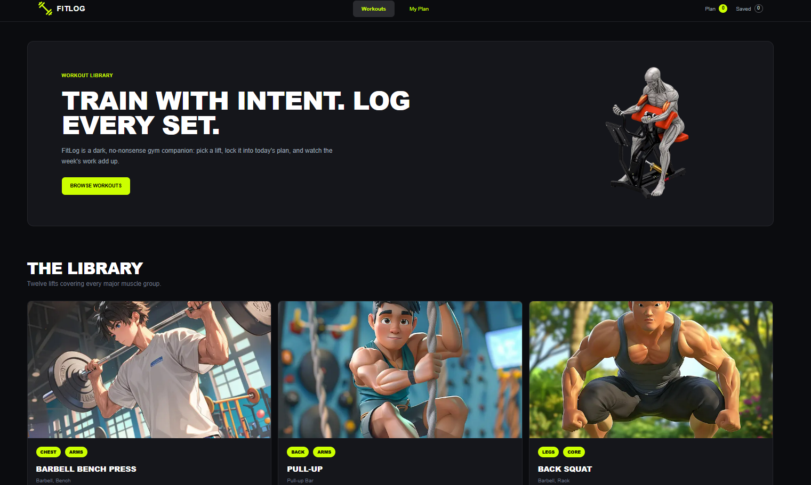

FitLog
A modern workout library application built with Next.js 14 that lets users explore exercises, build daily workout plans, save their favorite exercises, and track completed workouts — all powered by a public REST API integration.

About the Project
FitLog is a Next.js 14 workout library application that integrates with a public exercise REST API to provide users with a rich fitness tracking experience. It was built to demonstrate proficiency in modern Next.js App Router architecture, server side data fetching, and complex state management.
Users can explore a vast library of exercises categorized by muscle group, create personalized daily workout plans, save favorite exercises using localStorage, and mark workouts as completed to track their fitness journey.
The project is deployed on Vercel — the optimal platform for Next.js applications — with automatic deployments from the GitHub repository.
Technologies Used
Key Features
Exercise Library
Browse hundreds of exercises fetched from a REST API, categorized by muscle group (Chest, Arms, Legs, Back, Core) with details and difficulty levels.
Daily Workout Planner
Create and manage personalized daily workout plans by adding exercises from the library with custom sets and reps.
Save Favorites
Save favorite exercises using localStorage for quick access, persisted across browser sessions without needing an account.
Workout Tracking
Mark individual exercises as completed during a workout session, with a progress indicator showing completion percentage.
Next.js App Router
Built on Next.js 14's App Router with Server Components for optimal performance and data fetching patterns.
Fully Responsive
Mobile first responsive design that works perfectly on all devices, from phones to large desktop monitors.
What I Learned & Overcame
Next.js App Router Architecture
Understanding the new Next.js 14 App Router paradigm — including Server vs. Client Components, layouts, and nested routing — required a significant mindset shift from the older Pages Router approach.
REST API Data Fetching & Pagination
Handling API rate limits, implementing efficient pagination for large exercise datasets, and managing loading/error states with Next.js's built in data fetching required careful implementation.
State Persistence Across Pages
Managing complex state like saved exercises, daily plans, and completed workouts across multiple pages — using localStorage — while keeping the UI in sync was architecturally challenging.
TypeScript with Next.js
Properly typing Next.js specific patterns like page params, server actions, and API response shapes required learning TypeScript patterns specific to the Next.js ecosystem.
Potential Improvements
User Authentication (NextAuth.js)
Implement user authentication with NextAuth.js to allow users to create accounts and sync their workout data across devices.
Backend Database Integration
Replace localStorage with a proper database (PostgreSQL with Prisma or MongoDB) for persistent, cross device data storage tied to user accounts.
Custom Workout Creator
Add a drag and drop workout builder where users can create custom exercise sequences with sets, reps, rest times, and notes.
Progress Analytics Dashboard
Build a visual analytics dashboard with charts (Recharts) showing workout frequency, personal records, muscle group balance, and weekly progress.
Workout Reminders & Push Notifications
Add a Progressive Web App (PWA) layer with push notification support for daily workout reminders and goal milestone alerts.
See It in Action
Check out the live app or browse the source code on GitHub.